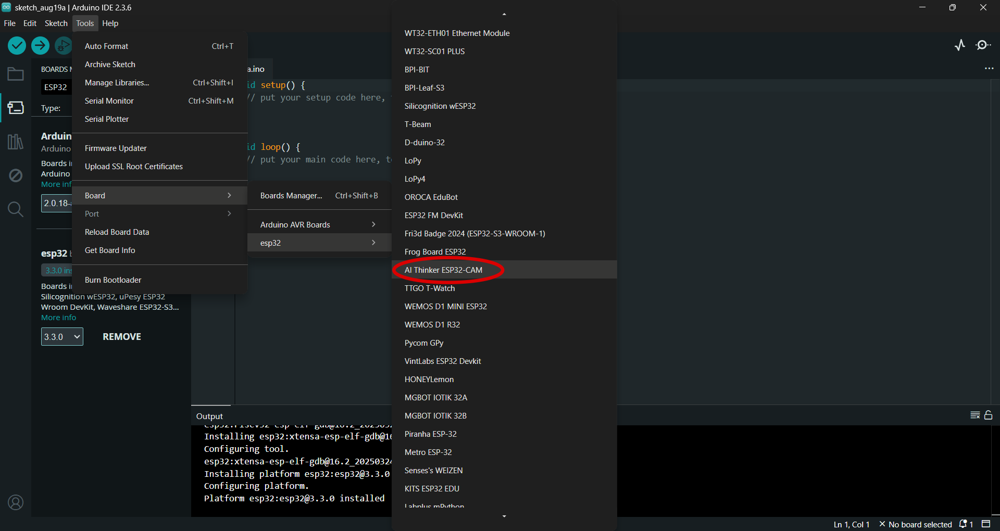

Constructing the BugCam-mini
§1. Materials
§2. Recommended tools
- Hot glue gun
- Razor blade
- Soldering Iron
- Pliers
§3. Constructing the case
Orient a bead case such that the lid opens to the right. Mount the battery holder to the case using epoxy. Note that hot glue will be sufficient in cool, dry environments (e.g. for interior use), but will fail under heat or high humidity.§4. Mounting the camera
Depending on the company the ESP32-CAM boards were purchased from, the camera may be packaged separately from the board. Ensure the camera is plugged fully into the board. Using superglue, fix the camera module to the SD card holder on the ESP32-CAM board. <> The lens focus on the ESP32-CAM is fixed using a small patch of glue. Cut this patch using a sharp blade (e.g. a razor or box cutter). <> Focus the camera manually by rotating the lens in its mounting. This may initially require a large amount of torque depending on how well the glue was cut. We recommend using pliers for the initial turn, but be extremely careful to avoid damaging to camera. The lens mounting can be broken if too much force is applied, and twisting may force the camera from the ribbon cable which, in our experience, cannot be reattached. <> For recommendations on setting the fixed camera focus, see section 9. If you are using an external antenna, we recommend attaching it before continuing. See section 6. Cut an approximately 1 cm2 square of EVA foam and fix it to the front of the ESP32-CAM board on the side with the camera. Ensure that the camera itself is not obscured. We find that, due to the low weight of the camera, hot glue is sufficient for mounting the foam to both the camera and case. <> Mount the foam to the interior of the case lid such that the camera faces outwards from the case. Note that the orientation of the board matches the orientation of the image it takes โ orient the camera horizontally for landscape images and vertically for portrait images. <>§5. Wiring the camera
Cut and strip the ends of two jumper cables. <> Solder the stripped ends to the battery wires. <> Tape the soldered ends and thread the wires through the hole in the side of the case. <> Seal the hole in the case with glue. We find hot glue provides a sufficient seal for situations where the camera is not exposed to heavy rains, but it may be necessary to use epoxy in wetter environments. <> Bend the contacts on the ESP32-CAM board for GPIO pins <>, <>, and <>, 90 degrees such that they face outwards from the board. <> Mount the negative jumper wire from the battery to GPIO pin <>. Mounting the positive wire will turn the camera on immediately. <> Optionally, once the camera is plugged in and running, seal the case and batteries using waterproof tape to avoid water damage. In practice, we have not found this necessary unless the camera is expected to be running in heavy rains. <>§6. Optional wifi range extender
While the built-in antenna for the ESP32 wifi chip can typically carry data over approximately 30 meters, This range can be extended to over 100 m by attaching a larger omnidirectional antenna. Also note that, while this step can be completed after the camera is mounted in the case, it may be considerably easier to perform steps <> and <> before mounting the camera. The wifi chip is connected to the built in antenna via a small resistor on the back of the ESP32-CAM board. Desolder this connection and resolder the resistor to the adjacent contact to allow attaching an external antenna. <> Attach the antenna pig-tail cable to the <> mount on the back of the board. This may take considerable force. <> As in step <>, create a small hole in the wall of the case on the same side as the hinges. Ensure that this hole is large enough to accept the base of the antenna without the mounting nut. <> Thread the pig-tail able through the hole and attach the antenna. <> Mount the antenna through the hole using the mounting nut and glue in place. <> Programming the BugCam-mini§7. Wiring the camera for programming
The ESP32-CAM can be operated under two modes - normal execution mode, and serial bootloader mode (See https://docs.espressif.com/projects/esptool/en/latest/esp32/advanced-topics/boot-mode-selection.html). To allow software to be uploaded to the camera, it must be set to bootloader mode. While the camera is unplugged, connect the GPIO0 pin to GND using a jumper wire. Note that some models may have pins in different orders than pictured. Always check the pin labels when wiring a new board. <> Plug the camera into FTID USB adapter by connecting pin TX to U0R and RX to U0T. <> Plug the ESP32 GND and 5V pins to the FTID GND and 5V pins in to power it. Note that if you are using an adapter which can be set to multiple voltages, it must be set to 5V. <> The camera software can now be modified.§8. Programming the camera
Install the Arduino IDE (available here https://docs.arduino.cc/software/ide/#ide-v2). The ESP32-CAM requires an add-on to program via this IDE. To install, click the Boards Manager icon or navigate to Tools > Board > Boards > Boards Manager.

Go to Tools > Port and select the COM port the camera is connected to
<>
To upload software from the Arduino IDE to the board, press the upload button in the IDE. When the IDE displays the text "Connecting", press the RST button on the ESP32-CAM to ensure the camera is in the right mode.
<>
The AI-Thinker ESP32-CAM tools include an example script for a wifi camera and dashboard (See section 9 below). We recommend using this script to test camera functionality and to monitor the camera focus.
A minimal script to take an image every minute while the camera is powered can be found here <>.